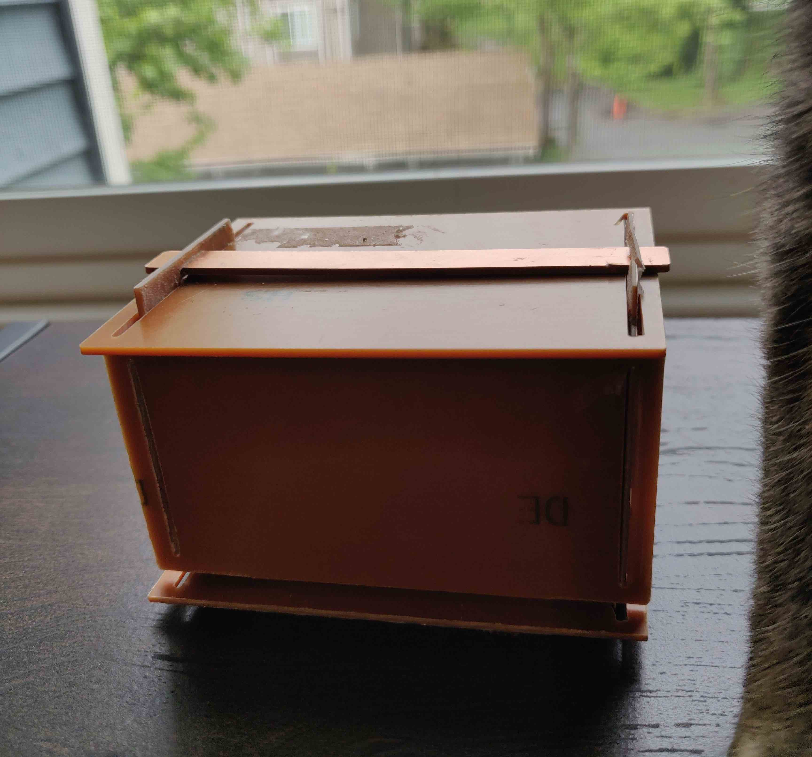

Check out my copper box

Here is all the documentation for assignment 4!
Onshape
Box-Edge_Cuts.gbr
fastener-Edge_Cuts.gbr
side 4-Edge_Cuts.gbr
Photo documentation:

Process
I knew I wanted to make something super simple. I was inspired by Kellie's design which had a super snug fit because if its nifty fastener.
Takeaways
- I feel like I'm just now starting to understand OnShape.
- Even by making my females .35mm bigger than my males, and even though I only used materials that measured exactly 1.35mm, some slots were not big enough and I had to sand them down.
- If I had time for another iteration I would have tried to make it more tightly bound.
Acknowlegements: Thank you to everyone who was in the lab on Tuesday and Wednesday for their help, including but not limited to Tanya for some of her tape, Tyson for some of his tape, Kellie for her tip about offsetting by at least .35mm and showing me MIRRORING in Onshape, Julie for her OnShape help, and many others!